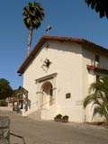

In 1817, the first Spanish settlement in Marin was established and with it, the Mission San Rafael, an asistencia, or outpost of Mission San Francisco de Asis. For a short while, Mission San Rafael served as a sanitarium mostly for the ill Coastonoan Indian neophytes from San Francisco. In 1822, Mission San Rafael achived full status as a mission, and had an Indian population at that time of over 1,000. The Mexican secularization of the missions in 1834 lead to the abandonment of Mission San Rafael in 1844. The mission fell into ruins and by 1870, the last of the mission structures were removed.
Hundreds of Indians were buried in the cemetery, which was south and west of the original mission church. Later, the remains of some people, such as
Don Timoteo Murphy (Timothy Murphy) were moved to Mt. Olivet Cemetery in north San Rafael. In 1880, John and Maria Lucas (she was a neice of Timothy Murphy) gifted the site of Mt. Olivet Cemetery to the Archdiocese of San Francisco. We speculate that remnants of the old mission cemetery must have remained after the removal of all buildings in 1870.
The remains of many Indians are still under the streets and buildings in the old mission area. In 1949, a replica of the mission was built near the original mission site.
1104 5th Ave, San Rafael, California 94901.

Plat Showing Old Mission and Modern Buildings
From a sign in front of the church.
Mission San Rafael Cemetery site, 2007; 5th Ave at A Street.
{kind=link}
{kind=link}
{kind=link}